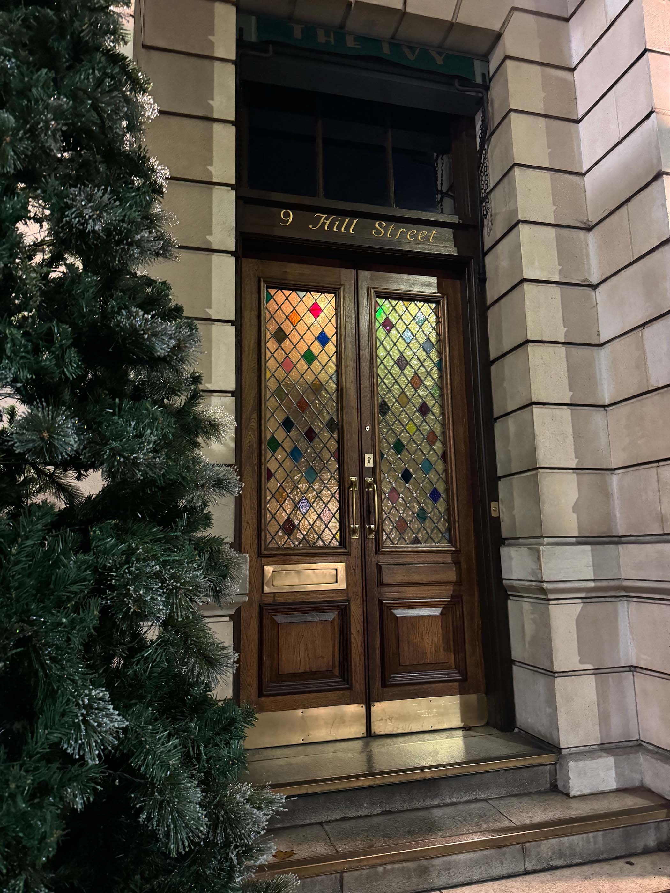
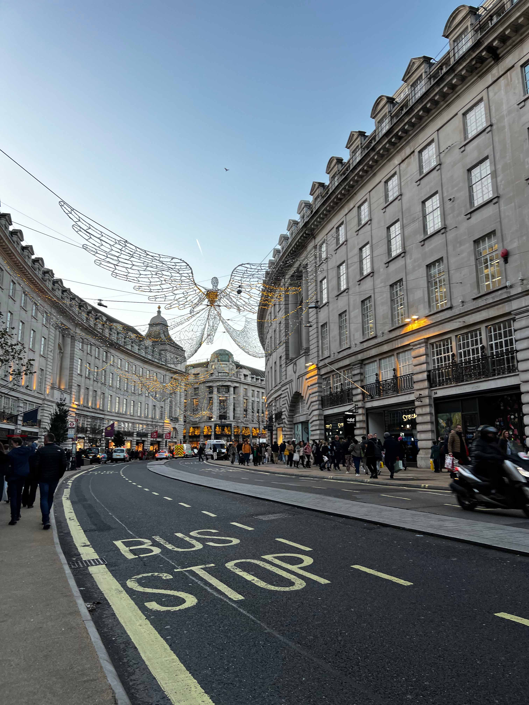
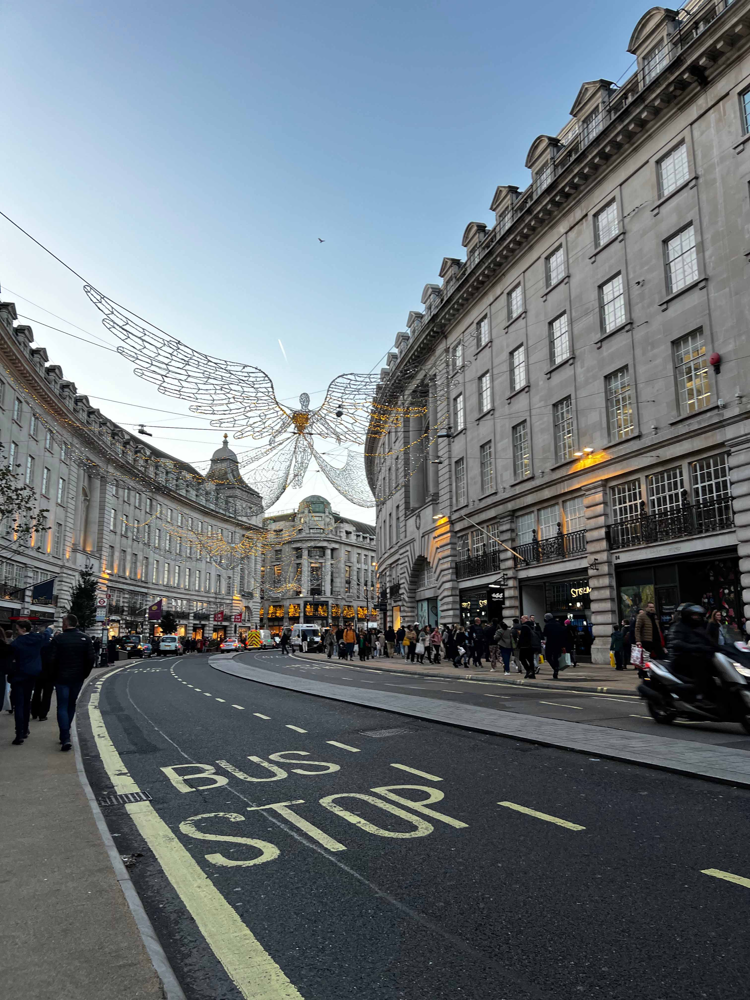
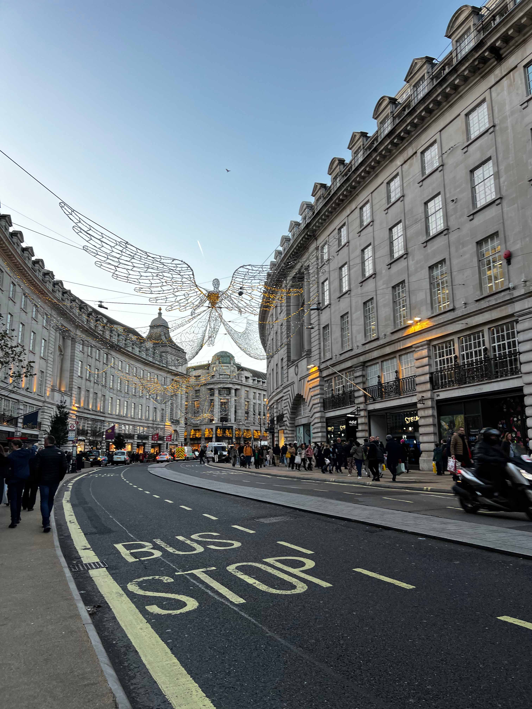
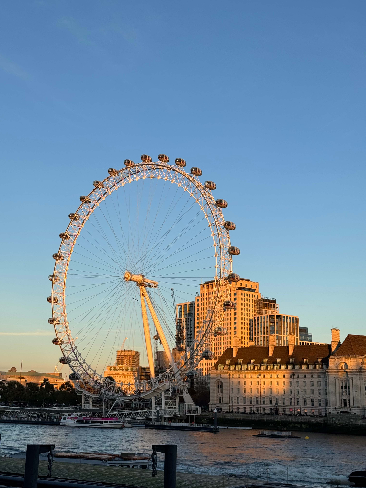

A rich history and a diverse culture. England is a country that is a part of the United Kingdom (UK). A lot of people think the UK is just England, but the UK Consists of England, Scotland, and Wales. England is known for its British empire, and the royals. If I, and many others think about the English we think: Tea. English people are very big tea drinkers. They have tea in the morning, afternoon, after dinner all day. Another thing I think about when I think about England is the red busses, the iconic red busses.
The capital city of England is London. London is a global hub for finance, culture, and politics. London is known for its rich history, diverse culture, iconic landmarks etc. Some of the landmarks of London are Buckingham Palace, The Big Ben, The British Museum, and the London eye. Especially during the Christmas holidays London is beautifully decorated for Christmas. The Streets of London are decorated with Christmas Lights and decorations. The streets I highly recommend are Regent Street, Oxford Street, Convent Garden & Carnaby street. There are a couple of famous streets and events that are well known around tourists. I have been to London twice, November 2022 and 2023. The perfect time to explore the Christmas feeling in London. Let's look at the perfect must visit spots together.

 



Winter Wonderland
The Hyde Park is a huge park in London, where every year during the holidays Winter Wonderland is being hosted. It is a large festive Christmas event that typically runs from late November to early January. Many tourists come here, but also a lot of local people.
In Winter wonderland you can go on attractions, that are suitable for all ages. These include outdoor ice-skating ring, a Christmas market, ice sculptures, scary houses, Ferris wheel, the ice mountain etc.
The Winter Wonderland hosts traditional Christmas markets with wooden chalets selling various types of products. From handmade crafts to food and drinks. The park has different types of food like German food, mulled wine, roasted chestnuts, doner etc.
While we were their music came from every corner, there is a lot of live entertainment. Such as circus shows, live music, comedy performances etc. There was not one quit spot in the wonderland.
There were fireplaces, Bavarian village, ice bars and a lot of other cool extractions. Entry to the park costs around 5-7 pounds in the evening. Free in the morning and every attraction or food stand has different prices. I highly recommend going to Winter Wonderland, I went with my family and friends and had an amazing time. Even if you don't like going on attractions, just being there is enough to feel the Christmas spirit.
The Big Ben
One of the most iconic landmarks in London and a symbol of the city is Big Ben. The name Big Ben refers to the bell inside the clock tower, not the tower itself. The tower is known as the clock tower which is now originally referred as the Elizabeth Tower.
The tower was completed in 1859 and designed by the architect Augustus Pugin and engineer Sir Charles Barry. The tower stands at the north end of the Palace of Westminster by the River Thames.
Lately the Big Ben has been renovated and restored. Because of this the Big ben was sparkling. When I was there it looked brand new. It was a very busy street with a bridge and pubs along the side of the road.

The London Eye
Along the River Thames you can see the London Eye. The London Eye is a giant Ferris wheel. It has become a prominent part of London's skyline. I remember when we were about to land, while sitting in the plane I saw the London city skyline with the Big Ben and the London eye. It was so cool, everything looked miniature.
An interesting fact about the London Eye is that it was initially intended as a temporary structure. However, due to its popularity, it became a landmark of London. The London Eye is 443 feet, 135 meters long and was designed by architect David Marks and Julie Barfield. It consists of 32 capsules and carries around 800 passengers during a 30-minute rotation. Unfortunately, I haven't been on the London Eye.